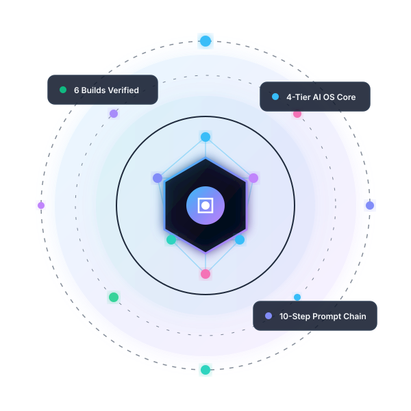
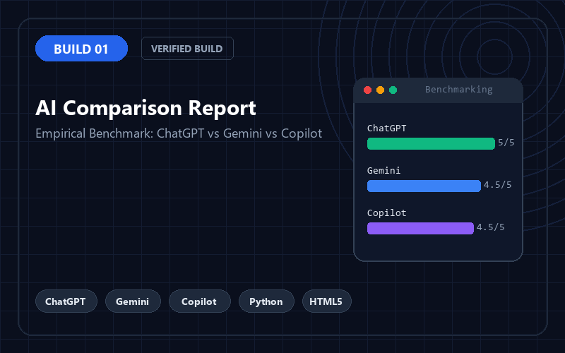
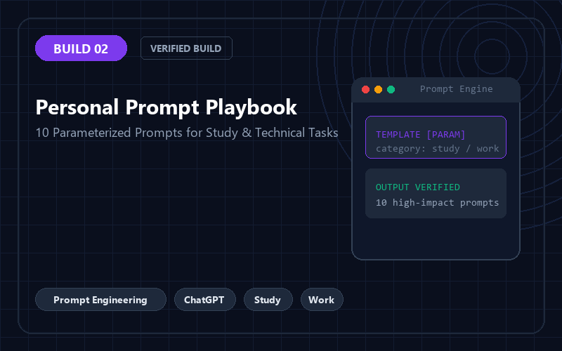
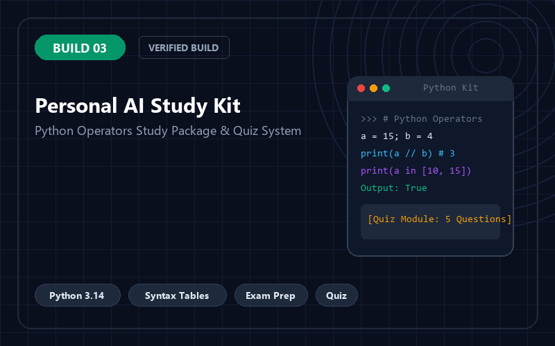
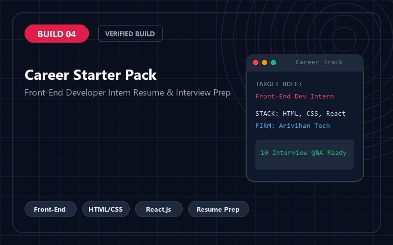
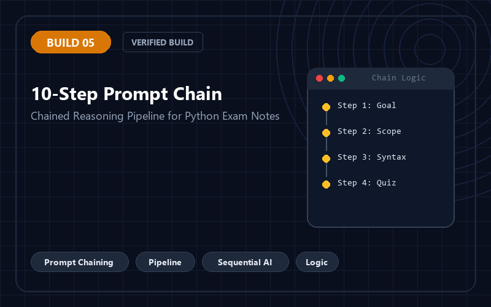

Exploring Artificial Intelligence, Prompt Engineering, AI Workflows, and Practical Digital Solutions. Transforming scattered AI chats into a permanent, structured Personal AI Operating System.

Building practical digital systems to enhance learning, software programming, and professional workflow efficiency.
BCA 2nd Year • Acropolis Institute of Technology and Research, Indore
I am a Bachelor of Computer Applications (BCA) student passionate about modern software development, artificial intelligence tools, and productivity engineering. Through an intensive 6-day AI Bootcamp, I progressed from basic prompt exploration to designing multi-stage prompt chains, creating source-grounded study packages, and architecting my own local Personal AI Operating System.
Six practical projects executed during the AI bootcamp, spanning model benchmarking, parameter-driven prompts, domain study kits, career packs, sequential reasoning, and digital OS architecture.

Empirical side-by-side benchmarking of OpenAI ChatGPT, Google Gemini, and Microsoft Copilot across Python coding, conceptual clarity, and HTML form design.

A collection of 10 practical, validated prompts (5 for study, 5 for work) equipped with parameters, clear output expectations, and sample verified outputs.

Curriculum-aligned Python Operators study kit containing core concepts, comprehensive syntax reference tables, practical code examples, and practice quiz questions.

Targeted internship preparation for a Front-End Developer Intern at Arivihan Technologies (Indore), featuring technical skill mapping, tailored resume, and interview prep.

A sequential prompt chaining pipeline where each prompt consumes previous outputs to synthesize deep, exam-focused revision notes on Python Operators.